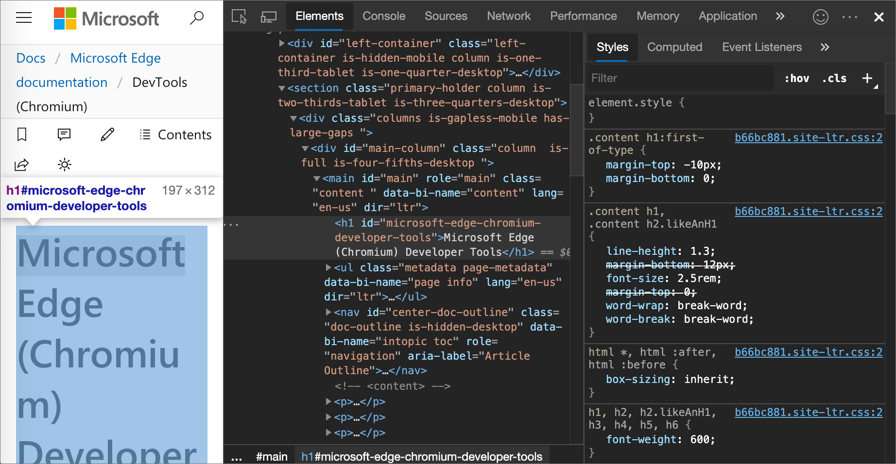

A CSS-t a weblapok szerkesztői és olvasói egyaránt használhatják, hogy átállítsák vele a lapok színét, betűtípusait, elrendezését, és más megjelenéshez kapcsolódó elemeit. A tervezése során a legfontosabb szempont az volt, hogy elkülönítsék a dokumentumok struktúráját (melyet HTML vagy egy hasonló leíró nyelvben lehet megadni) a dokumentum megjelenésétől (melyet CSS-sel lehet megadni). Az ilyen elkülönítésnek több haszna is van, egyrészt növeli a weblapok használhatóságát, rugalmasságát és a megjelenés kezelhetőségét, másrészt csökkenti a dokumentum tartalmi struktúrájának komplexitását. A CSS ugyancsak alkalmas arra, hogy a dokumentum stílusát a megjelenítési módszer függvényében adja meg, így elkülöníthető a dokumentum formája a képernyőn, nyomtatási lapon, hangos böngészőben (mely beszédszintetizátor segítségével olvassa fel a weblapok szövegét), vagy Braille-készüléken megjelenítve.
A CSS használható XML fájlok megjelenítésére is, így a strukturált dokumentumokhoz teljes körű stílust lehet megadni, befolyásolva az elrendezését, színét, betűtípusait az erre alkalmas kliensekben vagy webböngészőkben.
Az elemek stílusát különböző CSS szelektorokkal lehet kiválasztani:
- Minden elemre – a * szelektor használatával
- Az elem neve alapján – például minden 'p' vagy 'h2' HTML-elemhez
- Leszármazottak alapján – például az olyan 'a' elemekre, melyek egy 'li' elem részei, a szelektor "li a"
- class vagy id attribútumok alapján – például .class és/vagy #id a class="osztály" vagy id="azonosító" elemekhez
Ezeken kívül rendelkezésre áll több pszeudo-osztály, melyekkel további műveletekhez lehet stílust rendelni. Talán a legismertebb ezek közül a mindenek :hover, melynek stílusa akkor lép érvénybe, mikor a hozzá tartozó elem aktiválódik, például fölévisszük az egeret. Hozzá lehet fűzni a szelektorokhoz is, például a:hover vagy #elementid:hover. További ismertebb pszeudoosztályok a :first-line, a :visited vagy a :before.

A CSS használata
A CSS elsődleges célja, hogy szétválassza a dokumentumok megjelenését a tartalomtól. A CSS előtt a HTML dokumentumok csaknem minden megjelenéshez kapcsolódó része a HTML kódon belül volt; a betűtípusok, színek, háttérstílusok, elrendezések, dobozok, keretek és méretek külön meg voltak adva, gyakran ismétlődően, a HTML kód közepén. A CSS használatával a webfejlesztők ezeket az információkat áthelyezhetik a stíluslapra, mely így egy sokkal egyszerűbb, kevésbé redundáns HTML kódot eredményez. A HTML dokumentumok kisebbek lesznek, és mivel a webböngészők gyakran tárolják a CSS stíluslapokat a gyorsítótárban, a hálózati forgalom is jelentősen csökkenhet.
Például a h2 HTML elem megadja, hogy a benne foglalt szöveg második szintű címsor. Ez kisebb jelentőségű, mint a h1 címsor, viszont nagyobb, mint a h3 címsor. A h2 ezen tulajdonsága strukturális.
Szokás szerint a címsorok csökkenő méretben vannak megjelenítve, így a h1 a legnagyobb, mivel ez jelzi, hogy fontosabb a többi címsornál. A címsorok ezen kívül a nagyobb nyomaték kedvéért többnyire félkövér betűtípussal rendelkeznek. Így a h2 elem általában félkövér betűtípussal, a h3-nál nagyobb, de a h1-nél kisebb betűmérettel jelenik meg. A h2 elem ezen tulajdonsága prezentációs.
A CSS előtt a webfejlesztők, ha módosítani akarták a h2 elemek színét, betűtípusát, méretét vagy más jellemzőit, akkor a HTML font elemét kellett használniuk a címsor minden egyes használatakor. Egy középre igazított, dőlt betűs, vörös, Times New Roman típusú címsorhoz a következőt kellett használni:

több információ